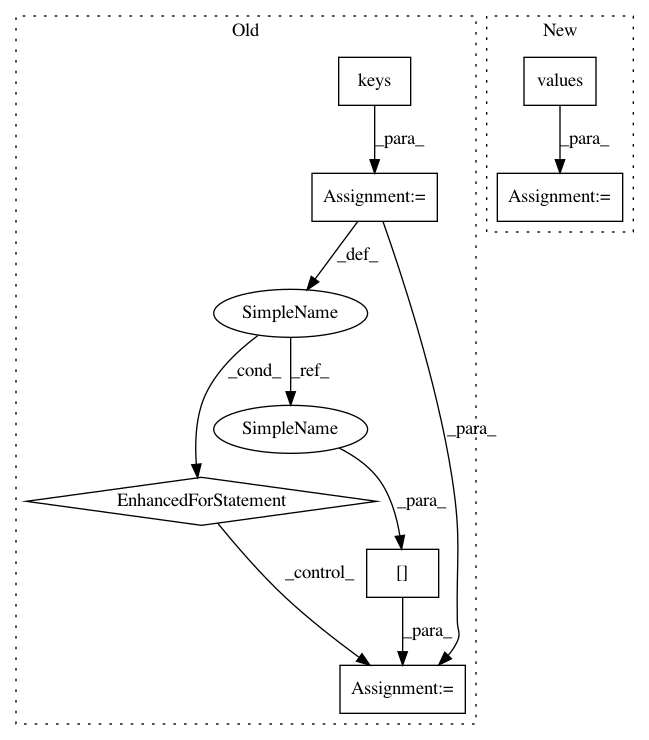

9f12ca095ab6e3295bd03fd1e50130a12b11569c,pytorch_lightning/trainer/connectors/logger_connector/epoch_result_store.py,HookResultStore,auto_reduce_results_on_epoch_end,#HookResultStore#,176
Before Change
// reduce across time first
time_reduced_outputs = []
for batch_idx in opt_outputs.keys():
tbptt_outs = opt_outputs[batch_idx]
tbptt_outs = tbptt_outs[0].__class__.reduce_across_time(tbptt_outs)
if len(tbptt_outs) > 1:
time_reduced_outputs.append(tbptt_outs)
if len(time_reduced_outputs) == 0:
continue
// reduce across training steps
After Change
outputs = epoch_metrics[opt_idx]
// reduce across time first
time_reduced_outputs = []
for tbptt_outputs in outputs.values():
tbptt_outputs = type(tbptt_outputs[0]).reduce_across_time(tbptt_outputs)
if len(tbptt_outputs) > 1:
time_reduced_outputs.append(tbptt_outputs)
if len(time_reduced_outputs) == 0:
continue
// reduce across training steps
In pattern: SUPERPATTERN
Frequency: 3
Non-data size: 7
Instances
Project Name: williamFalcon/pytorch-lightning
Commit Name: 9f12ca095ab6e3295bd03fd1e50130a12b11569c
Time: 2021-02-11
Author: carlossmocholi@gmail.com
File Name: pytorch_lightning/trainer/connectors/logger_connector/epoch_result_store.py
Class Name: HookResultStore
Method Name: auto_reduce_results_on_epoch_end
Project Name: merenlab/anvio
Commit Name: bb21b3314c57ec4208af8eed8041091cc51ec68a
Time: 2020-02-26
Author: kiefl.evan@gmail.com
File Name: anvio/profiler.py
Class Name: BAMProfiler
Method Name: generate_variabile_codons_table
Project Name: austin-taylor/flare
Commit Name: 99caf8c4ad819a460332fac56009f32df625283f
Time: 2017-06-13
Author: jburkert82@gmail.com
File Name: flare/analytics/command_control.py
Class Name: elasticBeacon
Method Name: percent_grouping